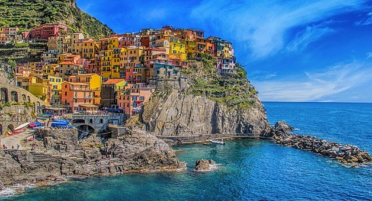

Star Rating: 5 / 5
Points of Interest:
We got to Cinque Terre and our mouths dropped. It had breath taking views. We stumbled on the Cinque Terre Trail after finding that there were three ways to travel in between the cities. We ended up taking the hike. It was worth it. Our taxi drivers name was Luca. He said we would make it to the city next door before the rain. We didn't make it... Very upset about our clothes being wet for dinner. #Park #Active
